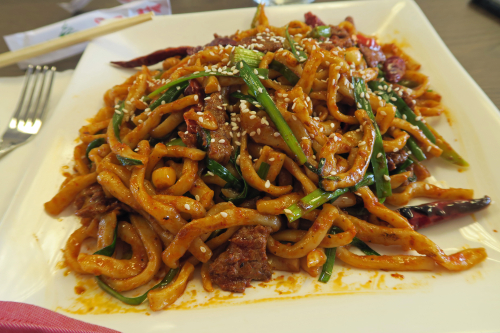

the Uyghur Restaurant
The Uyghur way of life is now at a crossroads. One path leads to cultural preservation and dignity for the Uyghur people. The other path is less than certain. At Uyghur Restaurant, we are committed to preserving what we can – the food and flavor of Uyghur culture. central Asian style. From Hot chicken stew to Laghman , handmade noodles to handmade dumplings, every dish is prepared by our chef who thoroughly understands that delicious food is at the heart of traditional Uyghur life.